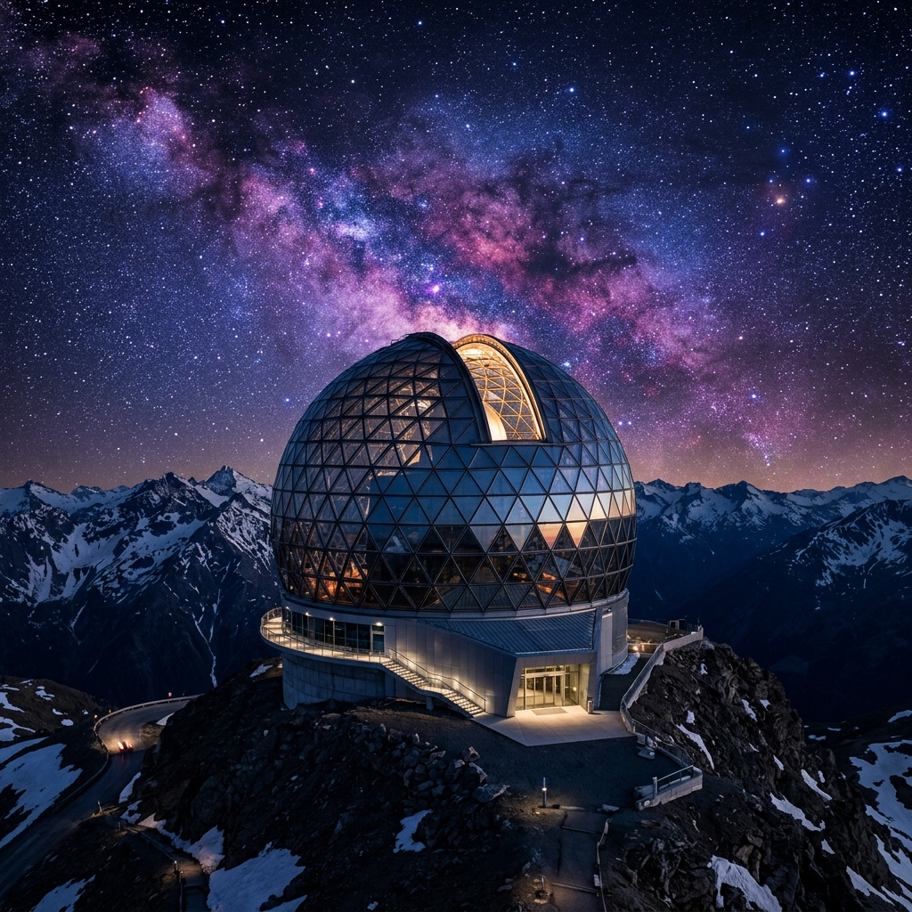
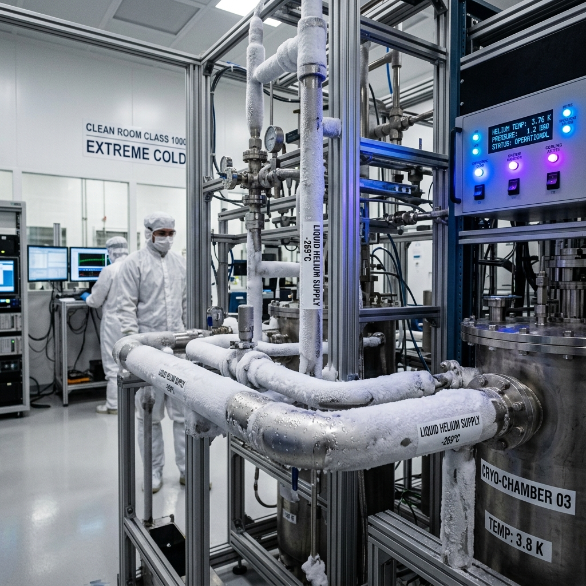
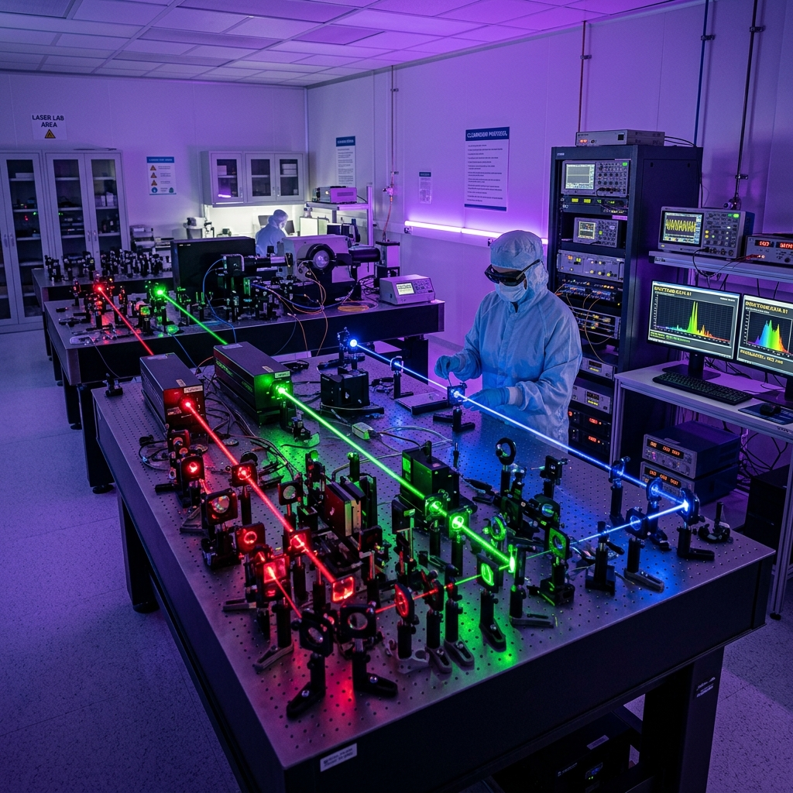

.webp)

Our Observatory.
Explore our advanced observatory equipped with state-of-the-art telescopes and instruments. Join us for live sky observations and research that expands our understanding of the universe.
Explore ObservatoryOptical & Radio Hardware
Our primary observatory domes house highly calibrated focal systems mapping sub-stellar structures daily.
VLT (Very Large Telescope)
Operates as four individual units or combined as an interferometer to detect planet transits.

Keck Observatory
Two twin primary mirrors utilizing adaptive optics to cancel out atmospheric turbulence.

Gran Telescopio Canarias
The largest single-aperture optical telescope on the planet, peering into the birth clouds of stars.
Cosmological Discoveries
Stackly is affiliated with three major institutes, publishing stellar logs that help calculate orbit decays and celestial trajectories.
Browse PublicationsExoplanet Atmospheric Signatures
Analyzing gas concentrations (such as methane and carbon dioxide) in the habitable zone of dwarf stars using OSIRIS spectrographs.
Stellar Wobble/Parallax Calculations
Precise mapping of local orbit paths to detect sub-surface gravitational pulls from undiscovered gas giants.
Local Supercluster Drift Mapping
Correlating red-shift measurements to compute speed variances in our local galaxy group drifting towards the Great Attractor.
Virtual Control Room
Test your coordinate entries inside our telemetry console. Select a deep space target and line up the optics.

Observatory Facilities
Our high-altitude research camps consist of multiple specialized compartments maintaining clean atmospheric values.

Observation Dome
A double-walled composite dome utilizing carbon panels to limit temperature gradients. Rotates on heavy fluid bearings.

Helium Cryo-Plant
Maintains telescope primary sensors at -80°C. Limiting thermal noise on pixels is critical for deep-sky photometry.

Spectrograph Labs
Climate controlled cleanrooms storing high-dispersion diffraction gratings mapping red-shift frequencies.
Schedule Observation Time
Book remote scheduling slots to coordinate focal targets across our dome network.